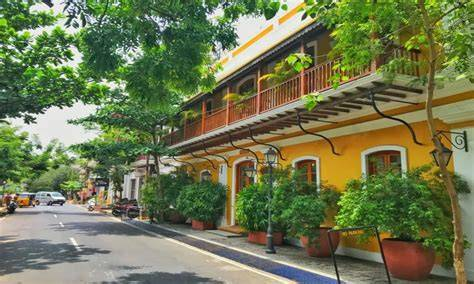
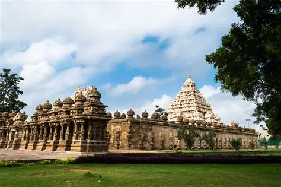

SUMMER SCHOOL 2027
Sightseeing
Explore popular tourist attractions and places of interest around Chennai during your visit to VIT Chennai.
Places to Explore
Discover historical landmarks, cultural destinations, beaches and recreational attractions located around VIT Chennai.



